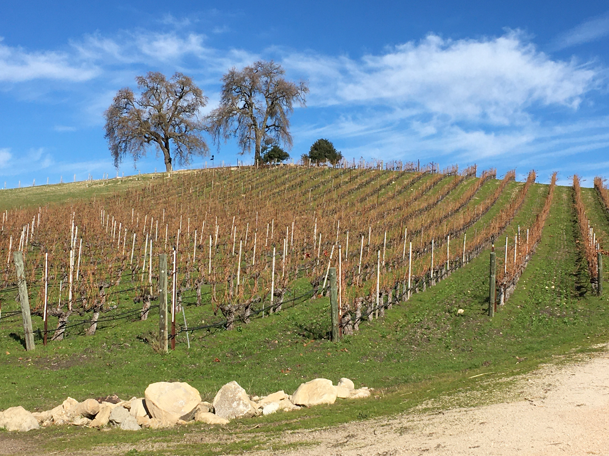
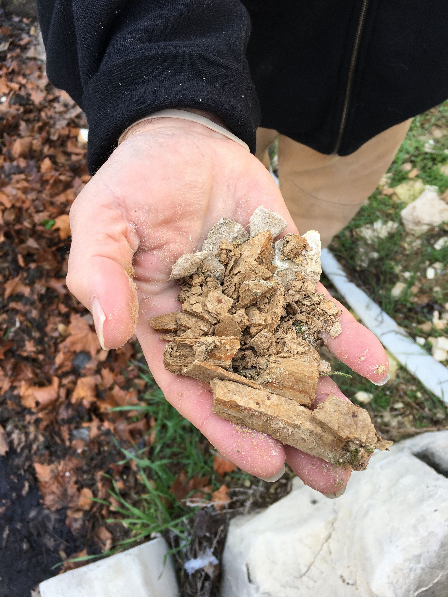
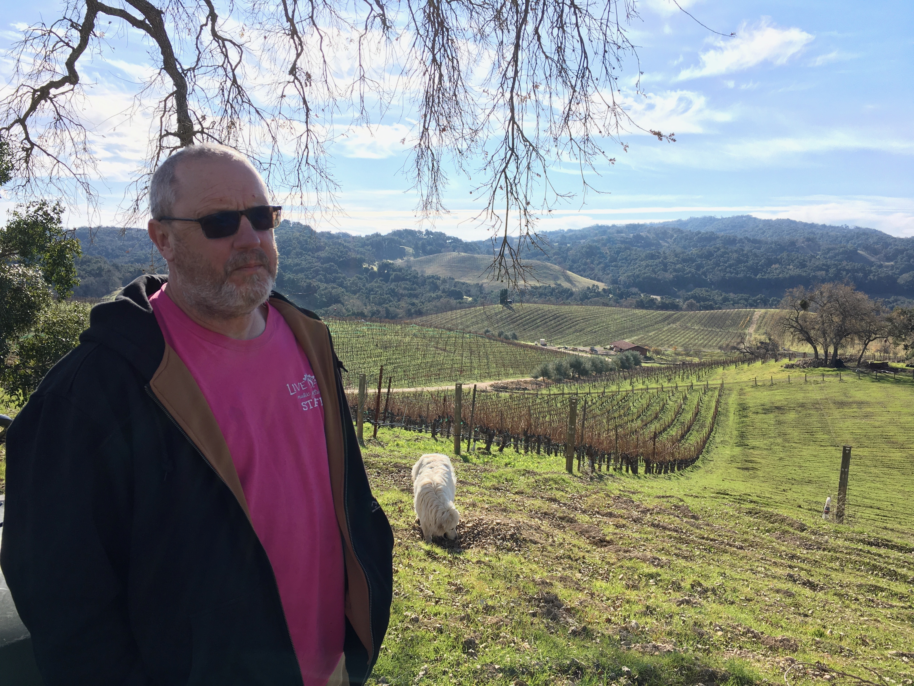
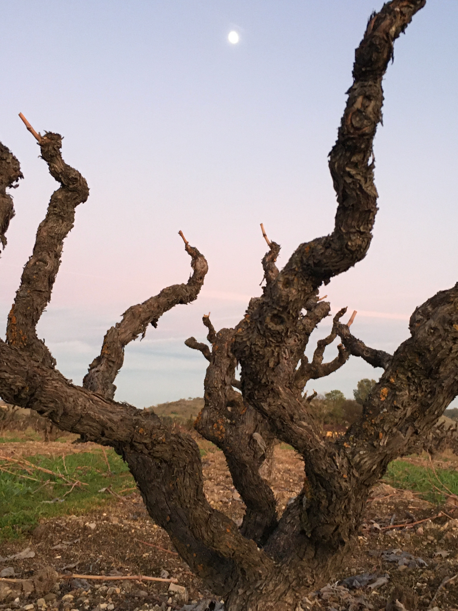

A Drought of Certainty
What happens when some of the most well-off, forward-thinking farmers in the country can't get ahead of climate change?
March 13, 2020
A drive down highway 101 from San Francisco provides a distinctly Californian study in contrasts. Near the Bay, even before dawn on a clear January morning, the temperature hovers comfortably near 50 degrees. In the Santa Clara and then the Salinas Valleys, America’s leading exponents of social networking and salad greens respectively, the mercury at 8am struggles to top 40. But past the tiny town of San Ardo, at the southern limit of the Salinas Valley, the rising sun is shrouded by a dense mist. Suddenly, temperatures plunge below freezing, and narrow views of the Salinas River give way to broad gray-brown hills—many of which are covered, acre after acre, in vineyards.
This is the Paso Robles Valley, simultaneously the hottest, coldest, and driest of California’s high-end wine regions, and its frigid mists are an artifact of what make it such a good place to grow grapevines.
“What you’re looking for,” says Gary Eberle, a winemaker who was among the first to recognize the area’s potential in the 1970s, “is cold nighttime temperatures to hold the acid in the grapes— and then you build sugar in them because the days are hot. And also—a place where the soil is not fertile.”
Eberle’s three criteria are a refrain heard in wineries throughout the region. Searing heat on summer days, nights more than 40 degrees cooler, and nutrient-poor, chalky soils that force vines to concentrate resources into fewer, better fruit—all of these make Paso, as the locals call it, a dream location for a certain kind of cowboy winemaker. By reputation, the red wines from here, mainly from heat-loving grapes like Cabernet Sauvignon, challenge Napa Valley at its most bombastic: heady, alcoholic, bold.
But with summer temperatures that rival California’s baking Central Valley, wine growing in Paso often means flirtation with disaster. While a typical 90-degree day contributes to lusciously ripe fruit, a 100-degree day—not at all unusual—can shut down a grapevine’s metabolism altogether. More than a few days of such heat can shrivel fruit and turn leaves into paper.
It’s a danger that longtime Paso winemakers are familiar with but can abide. After all, that kind of heat comes just a few times a year, balanced by an abundance of just-hot-enough growing days. As the number and prestige of wineries in the region has blossomed in recent decades, that delicate equilibrium has held—for now.
In 2017, according to records from the downtown Paso weather station, an all-time high of 19 days exceeded 104 degrees, a threshold past which scientists say no grapevines can be expected to be photosynthesizing. Winemakers say they held on that year—but it was tough going.
Climate science, for its part, is clear on this much: things in Paso are going to get even hotter. Far less clear is by how much. The gentlest scenarios forecast just a few more days of extreme heat in a year, with years like 2017 becoming only somewhat more common. Others portend a radically hotter climate. And for growers—even those who know that change is coming—that kind of uncertainty renders even the best climate predictions useless for any practical purposes.
***
At 9:30am on the morning of January 8th, with the sun already high over an oak-covered ridge to the west, Neil Collins had to shade his eyes as he held up a chunk of wet limestone to the light, turning it over in his hands. “We always talk about how the limestone holds the water—but to actually see it at the end of a dry summer in Paso Robles… that’s something.”
Collins is the vineyard manager and winemaker at Tablas Creek Vineyard, located in the densely forested Adelaida Hills to the west of the town of Paso Robles. Here, rainfall can exceed thirty inches a year—more than double the average in town.
Where Collins stood, it showed. Despite no rain having fallen for over a week, water was seeping through a retaining wall and running into the winery’s parking lot. “This hill is notoriously wet,” Collins explained (to whom it was notorious was left unsaid).
At times, wet can be very good. In the first half of the 2010s, a punishing drought ravaged agriculture and ecosystems across California. Winter after sunny winter passed, with scant fractions of the rain normally expected at that time of year. At one nearly two-month stretch, from December 13, 2013 to February 2, 2014—normally the height of the rainy season—records show that not a drop of rain fell in the town of Paso Robles at all. Throughout that period, the waterlogged soils of the hill behind Tablas Creek’s tasting room kept vines healthy.
Moist, porous limestone soils at Tablas Creek
For that reason, this hill is also where Collins began Tablas Creek’s program in dry-farming—the technique of withholding irrigation from vines altogether, thereby forcing them to make do with whatever rainwater the soil can retain. This is the norm in Europe, but unheard of in most California wine regions, which are simply too dry for the practice. The California growers who do dry-farm grapes often cite the quality of the wine they get: a stressed vine that has to dig its roots deep to find moisture will produce fewer berries, but with a more concentrated flavor.
But Collins takes the argument a step further.
“Climate change? I think the dry farming is probably our biggest statement in that regard,” he says. The reasoning goes like this: if a vine doesn’t get irrigation water, even in the hottest months, it learns, in a sense, not to expect it. Dry farmers across California vouch for the fact that such vines hold up better in hot, dry years than vines that are used to receiving regular watering.
More so than most winemakers, Collins takes the environmental aspect of his craft seriously. Tablas Creek is a certified organic and a certified biodynamic farm. The latter philosophy means that as much as possible, the vineyard should be its own functioning ecosystem, with minimal human disruption. Sheep replace lawnmowers; sheep dung replaces commercial fertilizer. “If you're trying to make wines that are expressions of place, the less you put on it, the better off you are. We’re trying to be as insular as we can.”
That expression of place also means completely eschewing Paso’s signature grape, Cabernet Sauvignon. Decades ago, founder Robert Haas helped spearhead a small but significant movement of Paso growers who focus on varietals from France’s Rhone region, like the red grape Mourvèdre and the white grape Marsanne. “Haas asked, why is everyone growing Bordeaux and Burgundy here when it’s so much more similar to the Rhone?” said Collins, citing the Rhone region’s considerable summer heat and limestone-rich soils. In Paso’s conditions, Cabernet, originally grown in the much cooler climate of Bordeaux, can become alcoholic and heavy, nothing like in France—while the Rhone varieties produce lighter, more bracing wines.
Winemaker Neil Collins surveys the vineyards at Tablas Creek
Collins also acknowledges, though, that what he grows today, and how he grows it, works only as long as the climate cooperates. Asked if he would grow other varieties if the climate made Rhone grapes a losing proposition, he said he would. (In fact, he already is, on a small scale. An accidental shipment of some Vermentino vines, a Sardinian and Corsican grape, turned out to produce a “super pretty” white).
What Collins does in the vineyard today, namely protecting his vines against heat and drought, and what he’s prepared to do tomorrow, namely change what he plants altogether, highlight the gradual but increasingly serious options that winemakers the world over will have to face as the climate warms—a development that Collins regards as inevitable.
The first step is to try to mitigate the effect of heat and drought. For Tablas Creek that means cultivating soil health and dry-farming vines for drought resistance. But in more conventional farms the simplest treatment is more irrigation. Hot weather causes water to evaporate from soils faster; plants require more water to keep up the same level of vigor. On the hottest days, those in the triple digits, growers simply put water on the ground in hopes that evaporation will cool the vines. Alternately, they can try to grow their canopies to provide more shade from the summer sun, or even place cloths on vines for the same purpose.
If adaptive measures like those fail (or even if they work, but wine quality begins to suffer), a second line of defense is to change out what you grow entirely. Collins has his Vermentino, but even in tradition-bound Bordeaux, experimental plantings of Portuguese, Spanish, and Italian grapes are being carried out, in case classic Bordeaux varieties like Cabernet Sauvignon and Merlot give out. But the wine industry hasn’t just contented itself to fiddle with traditional varieties: breeding programs at places like UC Davis and Cornell are trying to engineer more heat- and drought-resistant versions of the grapes that people want to plant—namely, the same ever-popular Cabernet, Merlot, Chardonnay, and the like.
A third and final strategy, one that can be driven by desperation as much as by foresightedness, is to find a new vineyard altogether. After all, in places like California, water demand for cooling stressed grapes will increase at the same that water resources become scarcer. That kind of crisis is already happening in Australia, where fire and drought are making some wine growers rethink their enterprises. But even where disaster hasn’t struck, big-pocketed companies are buying up land that isn’t good for wine growing just yet—in places like southern Argentina and Tasmania—in expectations that someday, they will have to shift some cool-climate grape growing there. “I’m watching French Champagne houses buying land in England,” said Collins, an Englishman. “They’re not doing that because they love the English!”
So far, California growers are not, by and large, abandoning their vineyards. But whether and how soon catastrophic heat comes for a place like Paso, which is already hot and dry, is a matter of some hand-wringing.
It’s not the kind of question that growers need guess at blindly. In the last several years, researchers have developed tools to aggregate a range of global climate models, which take into account variables like future carbon emissions scenarios, and make predictions available to the public at resolutions as fine as 1/8 of a degree of latitude and longitude, anywhere on the planet. One such effort, called CMIP5, formed the basis of the assessments that resulted in 2015 Paris Agreement, and has become the gold standard for generating “downscaled,” or highly localized, climate predictions.
It’s the kind of thing Neil Collins is curious to hear about—in principle.
In practice, when you pull data for a single 1/8-by-1/8-degree square encompassing some of the Paso area, the range of predictions that the models generate is all over the place. Some of them imply virtually no warming at all in the near future. By contrast, the most extreme single model envisages a whopping 38 days of extreme 104-degree heat every year—a figure similar to what Las Vegas experiences today—within just 20 years.
A little easier to absorb are the averages across models for a given emissions scenario, the most often cited of which are called RCP4.5 (which assumes carbon emissions peaking in 2040) and RCP8.5 (which assumes no reduction in emissions). Before 2050, those averages are reasonably close together, and collectively bring a picture of Paso’s future into view: by the 2030s, 20-24 days in the average year are forecast to exceed 104 degrees Fahrenheit, which still means more than twice as many days of leaf-killing, fruit-shriveling heat as in the last decade. Almost every year would be as bad as 2017, and most of them would be worse.
Predictions for extreme heat in Paso Robles diverge widely between best and worst case model runs, although the mean scenarios for RCP4.5 and RCP8.5 hew closely together through 2050.

Source: CMIP5 Projections for a grid square near Paso Robles; NOAA historical data for the Paso Robles weather station
When asked about what he would do in those conditions, Collins chuckled and said: “move to Canada.”
But after a moment, Collins denied that he was going anywhere. “Look, anyone in farming is going to take with a grain of salt any prediction of what’s going to happen in 20 years. Nobody is going to say, ‘Oh God, Columbia University said it’s going to be this much hotter in 20 years, we’d better rip the mourvèdre out.’ If that doesn’t happen, you’re going to say, ‘shit, I wished I hadn’t ripped it out!’”
“No,” he said, “I’ll evolve and adapt with it, rather than make drastic adjustments now because of somebody’s predictions.”
***
Neil Collins tends to stand apart from his peers in the Paso wine scene. “I want to say Neil is probably one of the more cerebral, intellectual guys about what's happening with growing here,” said Billy Grant, whose partner, Janell Dusi, is one of Paso’s few female winemakers. “Neil has a little more of a global perspective about it, and I love talking about this kind of stuff with him.”
But in his attitude to what future climate predictions mean to him, Collins is not much of an outlier at all.
Janell Dusi’s family has been in Paso Robles for a century, ever since her great-grandfather moved to the area from Italy. As many Italian homesteaders did at that time, Dusi’s great-grandfather planted a dry-farmed Zinfandel vineyard, well before either that grape or that method was prestigious—or California had much of a high-end wine industry. Those same vines, now rangy and gnarled, still thrive today, in an otherwise nondescript field just south of downtown Paso. The Dusis sell that fruit to local winemakers as well as bottling some of it in-house under Janell’s label, J Dusi Wines.
Asked what she thought about the projections from the CMIP5 scenarios, Dusi, like Collins, acknowledged that many more days of extreme heat would basically turn her fruit into raisins on the vine. Still, she said, knowing that wouldn’t lead her to do anything fundamentally different. “The old Zinfandel vines have seen a lot,” she said, citing their survival of the recent drought. “And people who appreciate them, who care about the uniqueness of each vineyard, that’s what matters. The wine will be different year to year—and that’s what people will appreciate. I can make a wine that tastes the same every year, but that’s not what we’re going for with old vineyards.”
A century-old zinfandel vine at J Dusi
On the other side of highway 101, Anji Perry is the viticulturist at J. Lohr Vineyards, a huge operation with vineyards up and down the Central Coast and Napa Valley—an organization, in other words, with the resources to skip town if it saw the writing on the wall. But Perry foresees nothing of the kind. “We’re not going to be moving out of Paso. We’ll figure out how to adapt. And how to be more effective with our resources, specifically with water and how to manage heat spikes better.”
Perry fully accepts that warming of the kind specified in the CMIP5 models is coming, and did acknowledge that J. Lohr might plant more heat-tolerant varieties alongside Cabernet Sauvignon in its vineyard just east of town—varieties like Tempranillo and Cabernet Franc. But Cabernet Sauvignon—“Cab is here to stay,” she said.
Then there’s Gary Eberle—a patriarch of the Paso wine industry, who is coming up on fifty years of growing mostly Cabernet, Chardonnay, and Syrah on the east side of highway 101. Before starting Eberle Winery and becoming a booster of the region, Eberle studied genetics and had been a National Science Foundation fellow. “I first refer to myself as a scientist,” he said. “I am a very firm believer in science. But I am also skeptical of a lot of science. And all I can do is tell you is that in the past twenty years, the growing seasons are cooler than they were in the 70s and 80s.”
Eberle kept temperature measurements at his winery for many years, and says he looks at high and low temperature readings every day. “I’m not worried about heat, I’m worried about cold. We as a species have fared much better when it’s warm than when it’s cold.”
“Can you imagine if Canada or Russia warm a couple of degrees?” he added. “How many people you could feed?”
Winemaker Gary Eberle
Eberle, who is 76, doesn’t imagine that any meaningful climate change will take place in his lifetime. But some things he is sure of. “My employees will get the winery when I’m gone. I’m going to hand these people a successful winery, and I feel very comfortable and confident that in the next 100 years we’re going to be able to keep growing the varieties that we have.”
***
Predicting the future of where you can grow a particular type of grape is a complicated business, for a long list of reasons.
In the first place, you have to define what climate a particular grape variety is best suited to. A decent number of scientific approaches attempt this, but perhaps none is as well-known as that of Greg Jones, who directs the wine studies program at Linfield College in Oregon. In the early 2000s, Jones was one of the first climate scientists to sound the alarm about climate change’s effects specifically on wine. Adapting a framework developed by A.J. Winkler in the 1970s, Jones depicts grapes varieties as falling somewhere in a cool-, intermediate-, warm-, and hot-climate spectrum.
Jones’ Grape Suitability Map by Temperatures

Source: Greg Jones, Linfield College
But this framework is difficult to generalize. Jones’ classification is empirical: it comes from observing which grapes are grown in which climates, rather than some fundamentals-driven model rooted in grape biology. That empirical approach is subject to the bias of taste. After all, Cabernet Sauvignon, as Jones has pointed out freely, is grown in the vastly different climates of Bordeaux and California—and is considered to be good in both places (if not always by the same people). It stands to reason that if enough growers are able to coax Cabernet Sauvignon to maturity in significantly hotter (or cooler) climates than the chart shows, Jones’ ranges might have to change.
A second difficulty is that the future climate itself is so difficult to predict, as the scenarios for Paso Robles show so clearly. That difficulty mounts the further ahead in time or the more specific in location the analysis becomes.
Ben Cook is a research scientist at Columbia’s Lamont-Doherty Earth Observatory who co-authored a recent paper addressing the exact question of where certain grape varieties will be likely to do best in the future. His team’s methodology goes slightly further than Jones’: the authors modeled various grapes’ life cycles by correlating historical weather records to when certain grape varieties bloomed, ripened, were harvested, and so on, using data across multiple decades and locations for ten types of grapes. Those grape models were then combined with worldwide climate models to predict what will grow best where in the future—including predicting which areas now too cold will open up for winemaking as time passes.
But that study limits the geographies that it discusses to huge areas, like all of California or all of South Africa. Cook said that any attempt to specify these model results beyond those broad regions would be to stand on a house of cards. The combined uncertainty in the grape models and the downscaled climate models means that trying to calculate exactly what should be growing in, say, Paso by 2050 would be no better than a guess. In other words, you have to pick between accuracy and specificity when making these kinds of predictions. And in any case, the models don’t take mitigation strategies like improved irrigation or breeding into account.
Lauren Parker, an environmental scientist at the USDA’s California Climate Hub, learned the hard way that a model that makes specific predictions can actually be less helpful than a more generalized one. Several years ago, she developed a web tool that synthesized several major approaches in one interactive framework. By integrating downscaled climate models and lifecycle models for grapes (and other tree crops), her tool allows a user to choose a West Coast geography, an emissions scenario (RCP4.5 or RCP8.5), and one of two wine grapes (Cabernet Sauvignon or Chardonnay) to show how and where the area suitable for that grape shifts over time. It was the perfect tool, she thought, for growers to plan for the future.
Then came the scorn.
Parker’s Future Crop Suitability Tool Shows How a Warming Climate Could Eliminate Some Cabernet Sauvignon Regions, While Opening Up Others

Source: USDA California Climate Hub’s Climate Climate Toolbox. https://climatetoolbox.org/tool/future-crop-suitability
“Yes, we were met with skepticism,” said Parker. “And a lot of it was justified.”
The main problem was that the predictions were too specific, without taking into account every possible variable—in other words, the model offered a kind of false precision. “The tool puts hard and fast bounds around criteria like heat and chilling requirements. The reality is if you need 2000 hours of growing heat, the model will qualify a year with 1999 hours as a bad year.” And like other approaches centered on fixed assumptions of vine life cycles, it also had nothing to say about mitigation strategies, breeding programs, or any of the myriad techniques that farmers might use to adapt to change. “At best, the tool should just provide some rough guidelines.”
That’s not how growers received it. “People looked at it and said, ‘what’s the point of this?’ It didn’t make them better served on a day-to-day basis,” recalled Parker. Her motives got called into question. “Who would make decisions based on a tool like this? Who is it for? Land prospectors, I guess. Wall Street.”
Parker’s experience with over-specified models, and Paso growers’ equivocal reactions to the practical implications even of the prescription-free CMIP5 projections, go to show that fundamentally, climate science is not reaching wine growers in a way that is actually helping them make decisions. This is in a field where the product is climate-sensitive, the actors are generally well-educated (and in many cases scientifically trained themselves), and the economic incentives are vast.
It is not to say that most growers doubt the premise of the research. It’s also not to say that growers don’t pay close attention to scientific research of other kinds. Anji Perry of J. Lohr, for example, closely follows the efforts of researchers at Davis to breed hardier vines—but the specifics of where the climate is headed is something she only hears at conferences from time to time. If climate science, and particularly predictive climate science, is to have an impact on savvy actors like Perry, it must find a way to generate results that are immediately actionable for them.
When asked whether his audience was meant to be growers or someone else, Ben Cook of the Earth Institute—whose paper concludes that wine grape acreage in California will eventually have to shrink—said that it really was meant to be growers. But he also said that it wasn’t for him to judge their actions or tell them what to do.
He even went as far as to say that he understood the decision of growers, especially smaller ones with more limited resources, to just double down on what they’re doing now. “One of the challenges in wine is that it’s a perennial crop—compared to the Midwest, where you can plant corn one year and soybeans or alfalfa the next,” explained Cook. “It’s a very big deal to change varieties. It takes four to five years to generate a harvest or to get a vintage. It’s not surprising to me that growers would err on the conservative side.”
Still, he said that growers ignore his research at their own peril. “My role as a scientist is to provide the best information available. All I can say as a scientist is: this is what’s coming. And the losing move is to do what you’re doing and hope nothing changes.”
Greg Jones, the Oregon scientist who’s been expounding about climate’s effect on wine making for decades, said that farmers by their nature can be hard to convince. “I can’t even begin to say, there are people in agriculture who don’t even understand that what they’ve been doing is adaptation to climate change. I’ll ask them, ‘Are you growing the same thing as before?’ They say ‘no—what I do now is just working better.’ But they don’t realize that the temperature in their area has gone up by 2.8 degrees, or whatever. They don’t think about it in those terms.”
Jones says that farmers he’s talked to tend to get into the weeds. “To show up with model that says ‘blah blah blah will happen,’ people will respond, ‘yeah, yeah, but can you tell me about cloud cover, bloom time, etc.’” Farmers and ranchers are conservative, he said, and resistant to thinking about big-picture events.
Neil Collins at Tablas Creek, ever the innovator, might disagree with the notion that he’s conservative. “What we’re doing is continually exciting. I’m investing in a biochar kiln; we’re furthering the sheep program and cleaning out under the forest.”
“Every harvest is exciting for me, and I run the winery as if each one is the best yet,” Collins said, when summarizing his expectations for the future. “The wines are better than they’ve ever been. The hope is, you can keep up that trajectory.”
Methodology:
The data component of this story consists of an illustration of the range of future climate outcomes for an area around the town of Paso Robles. For this, daily climate projections according to the CMIP5 protocol, including precipitation, maximum temperature, and minimum temperature for the RCP4.5 and RCP8.5 scenarios, for all available models, were downloaded from this source for WCRP climate projections: https://gdo-dcp.ucllnl.org/downscaled_cmip_projections/dcpInterface.html#About
The area examined was a 1/8 degree latitude by 1/8 degree longitude tile immediately southwest of Paso Robles, identified by manually entering latitude and longitude coordinates into the tool and clicking the tile that best corresponded to the wineries that were covered in this story.
Also downloaded were historical data for the weather station in the city of Paso Robles, through the NOAA interface, from 1971 through 2019.
There were 41 models in total, covering each scenario (RCP4.5 and RCP8.5). Some analyses involved pooling the results of all models in each scenario and computing the average temperature across them, or the average count of days exceeding an “extreme” heat threshold.
The temperature records for the “historical period” (defined by the CMIP5 as the years 1971-1999) of the modeled data were found not to correspond exactly to the actual data from the Paso Robles weather station. Specifically, the downscaled model runs were found to have a cooler temperature bias than the actual recorded temperatures. As such, for analyses that compared historical data to future projections, temperatures were calibrated according to percentiles in both period. For example, an important piece of this analysis concerns the number of days annually of “extreme” heat, defined as 104 Fahrenheit degrees or higher. In the actual historical record, that represents a 98th percentile daily maximum temperature. In the models results covering the historical period, the 98th percentile temperature was only 100.5 degrees Fahrenheit. For that reason, when measuring days of “extreme” heat in the predicted period, the threshold was treated as 100.5 degrees and not 104 degrees Fahrenheit.
An analysis was also performed of future agricultural water demand, according to a crop- and location-specific water demand model maintained by the California Water Resources Department, called CUP+. However, the results of that analysis were not used in this story.